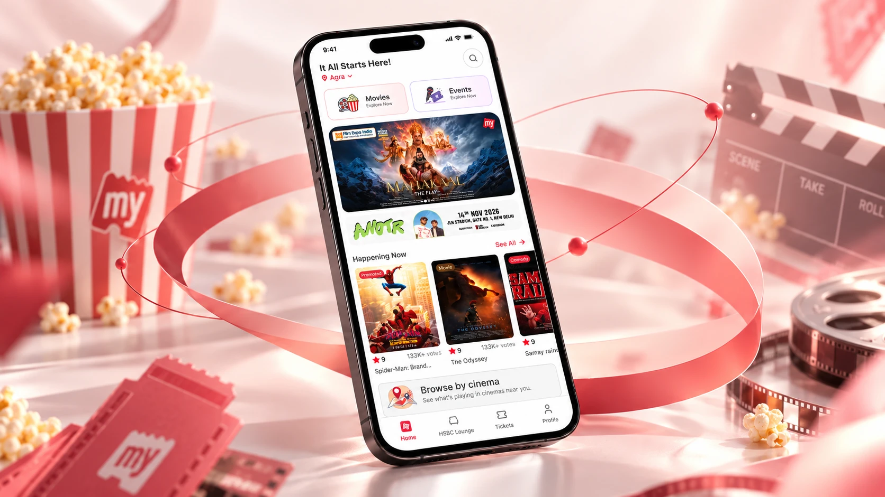

BookMyShow · Events discovery
Improving Event Discovery for BookMyShow
Most people never see the comedy shows, concerts and sports BookMyShow sells. I redesigned how the app helps them find Events.
From user testing
Most testers agreed: with assurance like this, they would invest more.

BookMyShow · Events discovery
Most people never see the comedy shows, concerts and sports BookMyShow sells. I redesigned how the app helps them find Events.
BookMyShow · Events discovery
Most people never see the comedy shows, concerts and sports BookMyShow sells. I redesigned how the app helps them find Events.